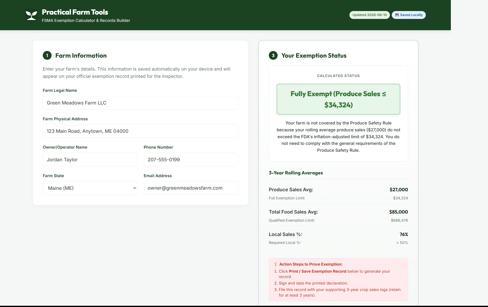
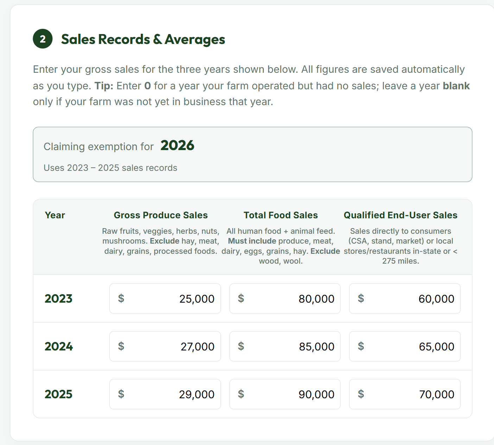
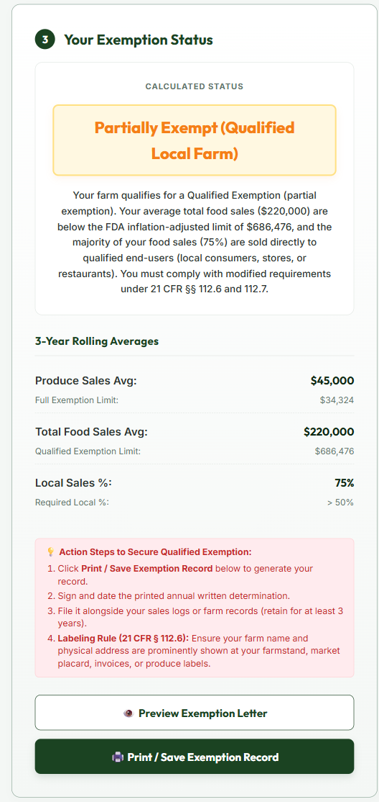
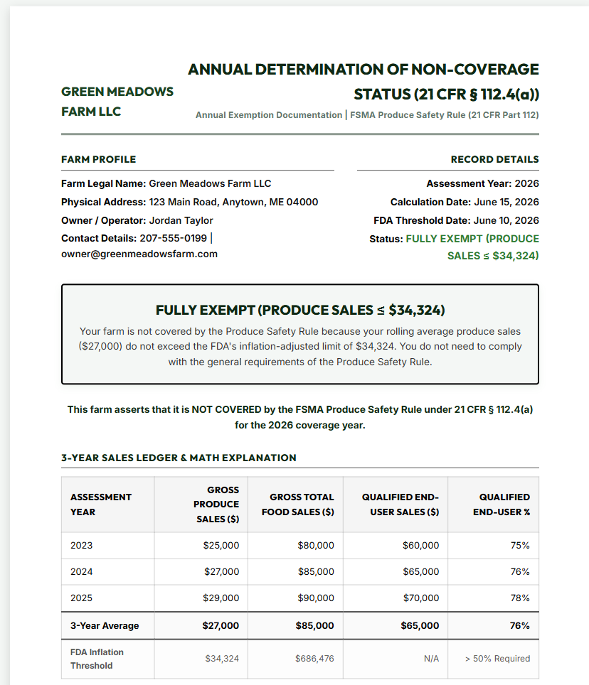
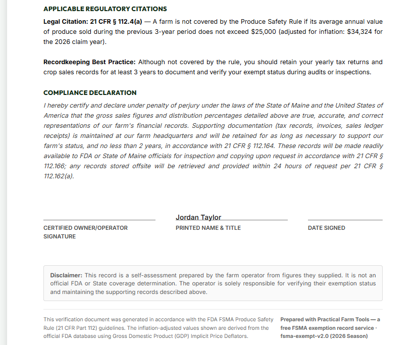
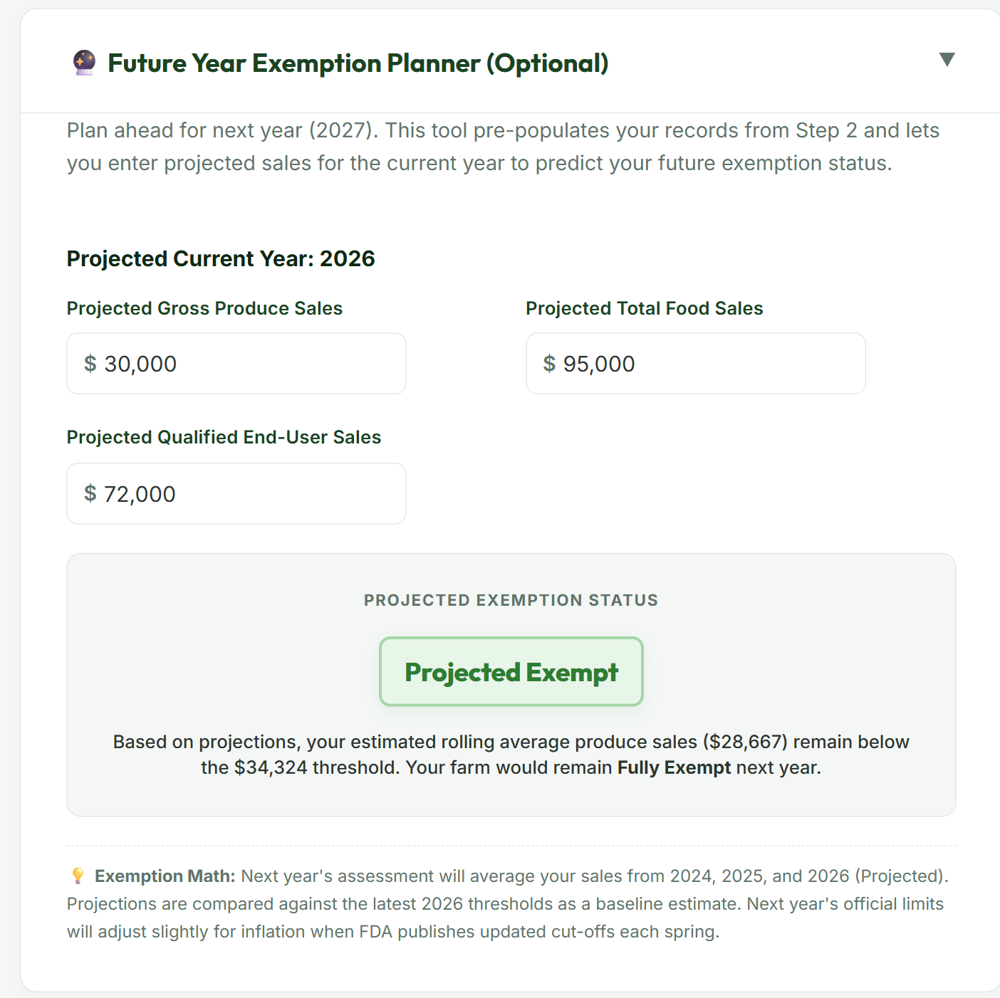

Why this tool exists
If you grow and sell produce, the FDA's Food Safety Modernization Act (FSMA) Produce Safety Rule applies to you — unless your farm is small enough or local enough to be exempt. Most small farms are exempt. The catch is that the exemption isn't automatic paperwork-free: the thresholds change every year with inflation, the math uses a three-year rolling average, and if you claim a qualified exemption you're required to keep a written record showing you checked your eligibility annually.
This calculator handles all of that. You type in three years of sales numbers, it tells you exactly where you stand using the FDA's current thresholds, and it produces a signed, citation-backed record you can hand to an inspector. The whole thing takes about ten minutes.
1Tell it about your farm
Open the app and fill in your farm's name, address, and contact details. This information appears on your printed exemption record, so use your farm's legal name — the one on your tax filings.
Everything you type is saved automatically on your own device. Nothing is uploaded anywhere, there's no account to create, and no one else can see your numbers. If you close the app and come back next week, your information is still there.

2Enter three years of sales
This is the heart of it. For each of the three years shown, enter three numbers:
- Gross Produce Sales — raw fruits, vegetables, herbs, sprouts, nuts, and mushrooms. Leave out hay, meat, dairy, grains, and anything processed.
- Total Food Sales — everything you sell that people or animals eat: produce, meat, dairy, eggs, grain, hay. Leave out non-food items like timber, wool, or ornamental plants.
- Qualified End-User Sales — food sold directly to consumers (farmstand, farmers' market, CSA, online direct sales) or to restaurants and stores in your state or within 275 miles.
New farm? Enter 0 for a year you operated but had no sales, and leave a year blank only if you weren't in business yet — the calculator adjusts the average accordingly.

3Read your result
The status panel does the math the same way the FDA does — a three-year rolling average compared against the current inflation-adjusted thresholds — and gives you one of three answers, each with a plain-language explanation of what it means and what to do next:
| Status | What it means |
|---|---|
| Fully Exempt | Your average produce sales are at or below the FDA threshold ($34,324 for 2026). The Produce Safety Rule doesn't cover your farm. Keep sales records on file to show it. |
| Partially Exempt (Qualified) | Your food sales are under the limit ($686,476 for 2026) and most of them go to local buyers. You skip the rule's general requirements but must label your products with your farm name and address, and keep an annual written eligibility record — which this app prints for you. |
| Not Exempt | Your farm is fully covered by the rule. The app explains exactly which threshold you crossed, so there's no guesswork about why. |

4Print your record
Once your farm name and your sales numbers are in, the Preview Exemption Letter and Print / Save Exemption Record buttons unlock. The document it generates isn't a generic printout — it's a formal annual determination with your sales ledger, the three-year math shown line by line, the specific federal regulations that apply to your status, and a signature block.

Sign it, date it, and file it with your sales records. If an inspector ever asks how you determined your exemption status, you hand them this.

5Optional: look ahead to next year
Wondering whether a good season could push you over a threshold? Open the Future Year Exemption Planner, enter what you expect to sell this year, and it projects next year's status using your existing records plus your estimate. Useful when you're deciding whether to expand a crop, take on a wholesale account, or start preparing for full coverage ahead of time.

A few things worth knowing
- It works without a signal. Once you've opened the app on your phone or computer, it keeps working with no internet at all — in the barn, in the field, anywhere. Add it to your home screen and it behaves like a regular app.
- The numbers stay current. The dollar thresholds come straight from the FDA's official inflation-adjusted cut-offs, which are updated each spring. The app shows the date of its threshold data right in the header, so you always know what it's working from.
- Your data stays yours. Sales figures never leave your device. There's no account, no sign-up, and nothing for anyone to look at but you.
- It's free. No trial, no upsell.
This tool is provided to help farms understand and document their status under the FSMA Produce Safety Rule (21 CFR Part 112). It is not legal advice. If your operation is complex or sits close to a threshold, it's worth a conversation with your state produce safety program or extension office — in Maine, that's the Maine Department of Agriculture, Conservation and Forestry.